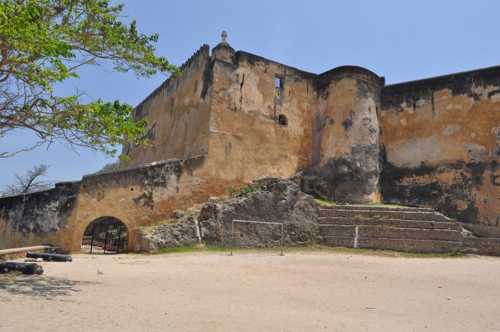
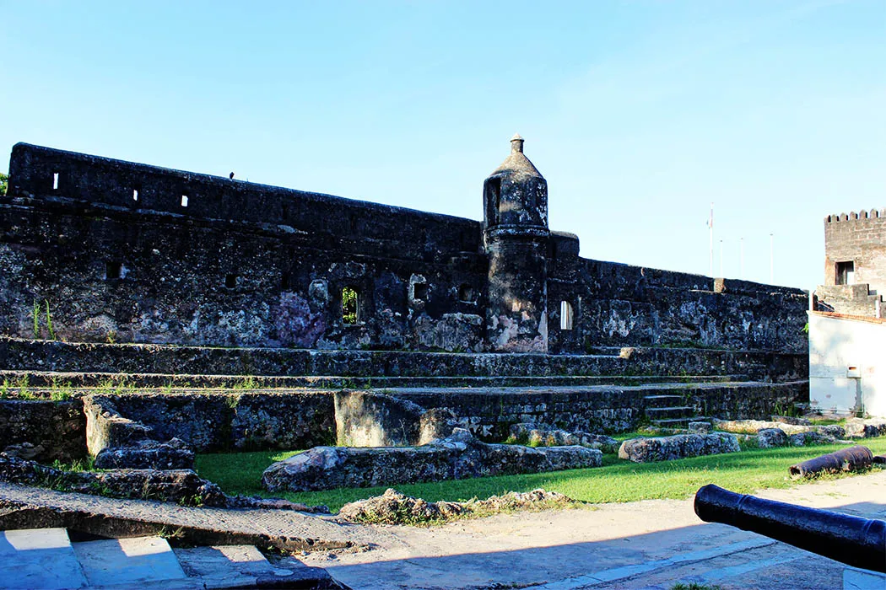

Fort Jesus, located on Mombasa Island, was built between 1593 and 1596 by the Portuguese to protect the Old Port of Mombasa. Designed by Giovanni Battista Cairati, the fort was a key part of the Portuguese effort to control Indian Ocean trade. It was built in a Renaissance style, with local Swahili labor contributing to its construction. The fort's shape resembles a man lying on his back, and it is considered a masterpiece of military architecture. Throughout its history, Fort Jesus was captured and recaptured multiple times. The Portuguese lost it to Sultan Yusuf of Mombasa in 1631, but regained it in 1632. In 1698, the Omanis seized it after a long siege, marking the end of Portuguese control. The fort later passed through different hands, including local rule and the British, who turned it into a prison in 1895. Visit Youtube Fort Jesus became a national museum in 1958 and was declared a UNESCO World Heritage Site in 2011. It is now a major tourist attraction, known for its well-preserved 16th-century architecture and for housing historical structures like Oman House, a water cistern, and a deep well. The fort also serves as a hub for research, conservation, and education More info on wikipedia
USES OF FORT JESUS THROUGHOUT THE HISTORY
Throughout its history, Fort Jesus has had several different uses, reflecting the various powers that controlled it over the centuries. Here are the key uses of the fort:
1. Portuguese Military Base (1596–1698):
The Portuguese built Fort Jesus to protect their interests and control the Old Port of Mombasa, a key location for trade in the Indian Ocean. It served as a military stronghold to defend against potential attacks, particularly from the Omani Arabs and local forces.
2. Omani Military Base (1698–1837):
After the Omani Arabs captured the fort in 1698, it became a strategic military base for the Omanis. It served as a barracks for their troops and a center for controlling the East African coast, especially the vital trade routes.
3. British Prison (1895–1958):
When the British took control of Mombasa and established the East Africa Protectorate in 1895, Fort Jesus was converted into a prison. The fort was used to house prisoners, including political detainees during the colonial era.
4. National Museum (1958–Present):
In 1958, after Kenya gained independence, Fort Jesus was declared a national museum. It was restored and opened to the public to preserve its historical significance. Today, it serves as a museum showcasing the rich cultural heritage of Mombasa and the Indian Ocean coast, attracting local and international tourists.
5. UNESCO World Heritage Site (2011–Present):
Fort Jesus was declared a UNESCO World Heritage Site in 2011, recognizing it as one of the finest examples of 16th-century Portuguese military architecture. It continues to be a symbol of the region’s history, used for education, research, and cultural preservation.
Today, the fort stands as a symbol of the diverse cultures and powers that influenced East Africa over the centuries.

SIGNIFICANCES OF FORT JESUS
Fort Jesus holds significant historical, cultural, and architectural value, with its importance spanning several centuries. Here are some key aspects of its significance:
1. Strategic Military Importance:
Originally built by the Portuguese in 1596, Fort Jesus was a key military stronghold used to protect the Old Port of Mombasa, a crucial trading hub in the Indian Ocean. Its location helped control the trade routes, making it vital for colonial powers, including the Portuguese, Omani Arabs, and later the British.
2. Symbol of Colonial Power Struggles:
The fort witnessed the struggle for control over the region, changing hands multiple times. The Portuguese, Omani Arabs, and British all used the fort to secure their dominance over the East African coast and the Indian Ocean trade. It represents the shifting influence of different colonial powers in East Africa.
3. Architectural Masterpiece:
Fort Jesus is an excellent example of late Renaissance military architecture. Designed by Giovanni Battista Cairati, it was the first European-style fort built outside Europe, made to withstand cannon fire. Its design reflects the blend of European and local construction techniques, influenced by Italian and Swahili traditions.
4. Cultural Heritage and Preservation:
The fort is a symbol of the cultural interaction between various peoples, including the Portuguese, Omani Arabs, Swahili, and later the British. It stands as a testament to the region's diverse history, with its architecture and artifacts reflecting these influences.
5. National and Global Recognition:
In 1958, Fort Jesus was declared a national museum, and in 2011, it was designated as a UNESCO World Heritage Site, recognizing its outstanding historical value. This status highlights its importance not just to Kenya but also to the world as a preserved landmark.
6. Tourism and Education:
Today, Fort Jesus serves as a popular tourist attraction and an educational center. It hosts exhibitions and research programs that help preserve and educate the public about the region's rich history. It is also a place for locals and visitors to learn about the history of colonialism, trade, and cultural exchange in East Africa.
In essence, Fort Jesus is a symbol of historical resilience, representing the intersection of various cultures and powers in shaping the history of Mombasa and the wider Indian Ocean world.
